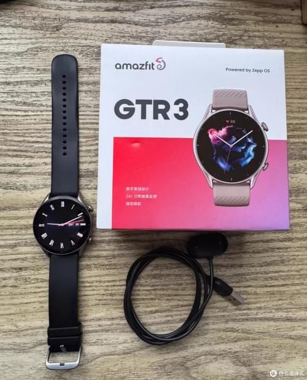

华米 Amazfit GTR

24 天续航的千元圆表，续航焦虑的解药。
客观评测
Amazfit GTR 采用 1.39 英寸 AMOLED 屏与铝合金表壳，内置 GPS+GLONASS 双星定位与 12 种运动模式。官方标称日常续航 24 天，实测每天跑步半小时、常亮通知的重度使用下也能撑三周以上，GPS 连续记录约 22 小时。支持 50 米防水、睡眠监测与全天心率，国内版额外提供 NFC 公交卡。硬件规格在千元档几乎没有短板。
主观点评
GTR 最大的幸福感来自"忘记充电"：出差一周完全不用惦记电量。圆形表盘加金属边框，看起来比实际价格贵一截，搭配正装也不违和。系统轻快但封闭，装不了第三方应用，适合只要通知、运动记录和长续航的用户。它证明了智能手表不一定需要全功能，把续航和颜值做好同样有市场。
优点与不足
- 续航近一个月，出差不用带充电器
- AMOLED 屏幕显示细腻，外观精致
- 千元内性价比突出
- 第三方应用生态薄弱
- 消息回复功能有限
- 心率在高强度运动时偶有跳变
参数规格
| 屏幕 | 1.39 英寸 AMOLED 圆形屏 |
|---|---|
| 传感器 | 光学心率、加速度计、气压高度计、地磁传感器 |
| 定位 | GPS + GLONASS 双星定位 |
| 防水 | 5ATM（50 米防水） |
| 电池/续航 | 日常使用约 24 天，GPS 模式约 22 小时 |
| 系统 | Amazfit OS（RTOS） |
| 兼容性 | iOS / Android |
| 功能 | 12 种运动模式、睡眠监测、通知推送、NFC 公交（国内版） |
| 表壳 | 铝合金中框 |
| 重量 | 约 36 克（不含表带） |